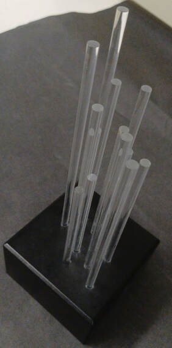
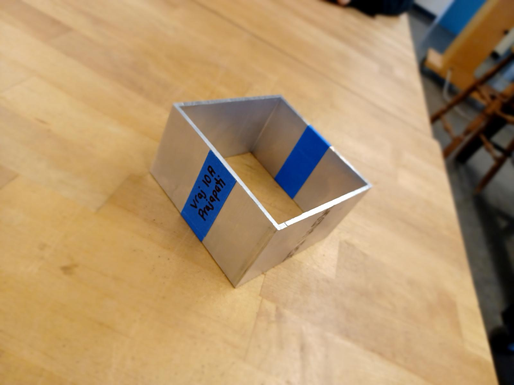
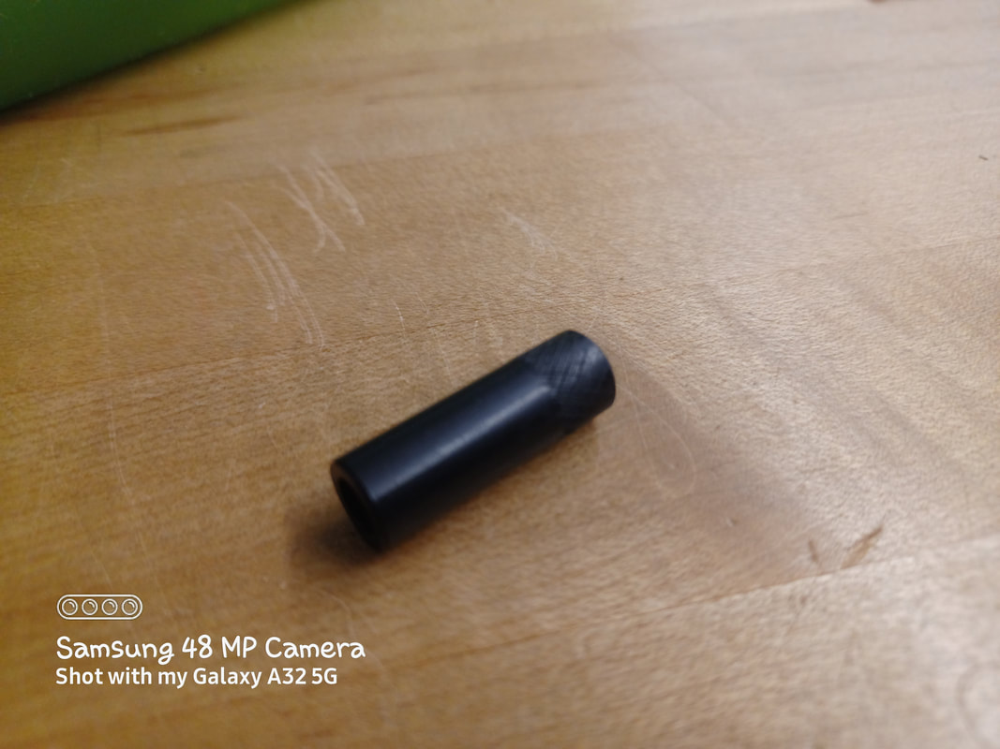
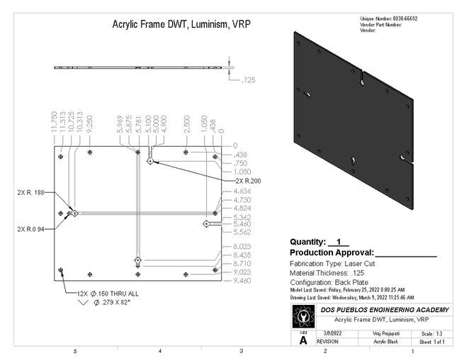
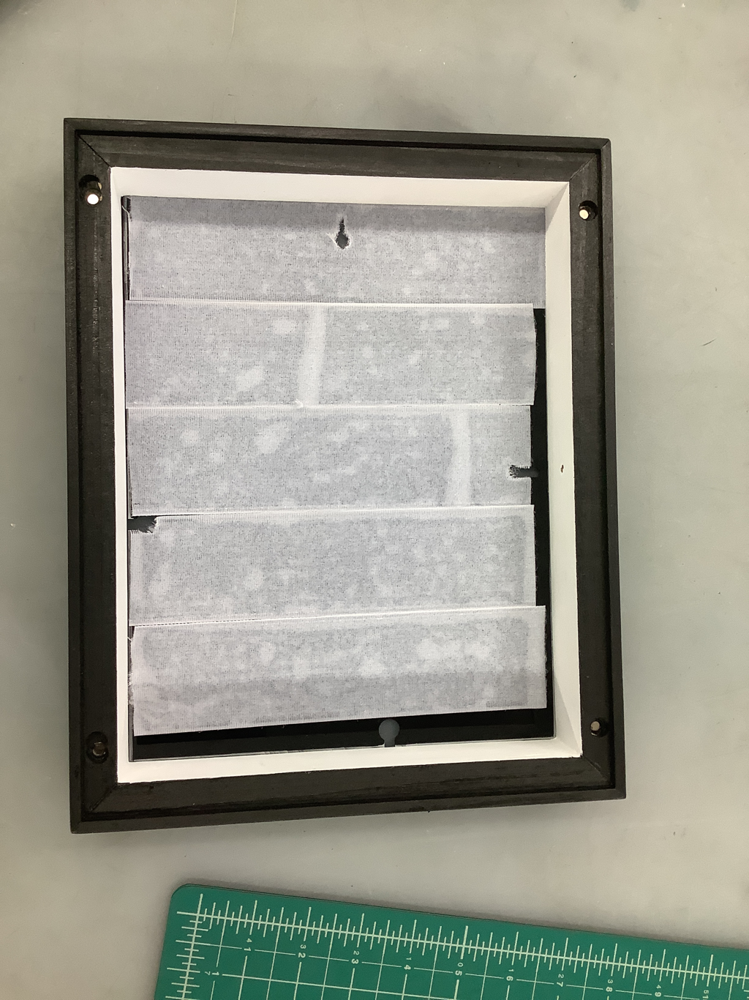
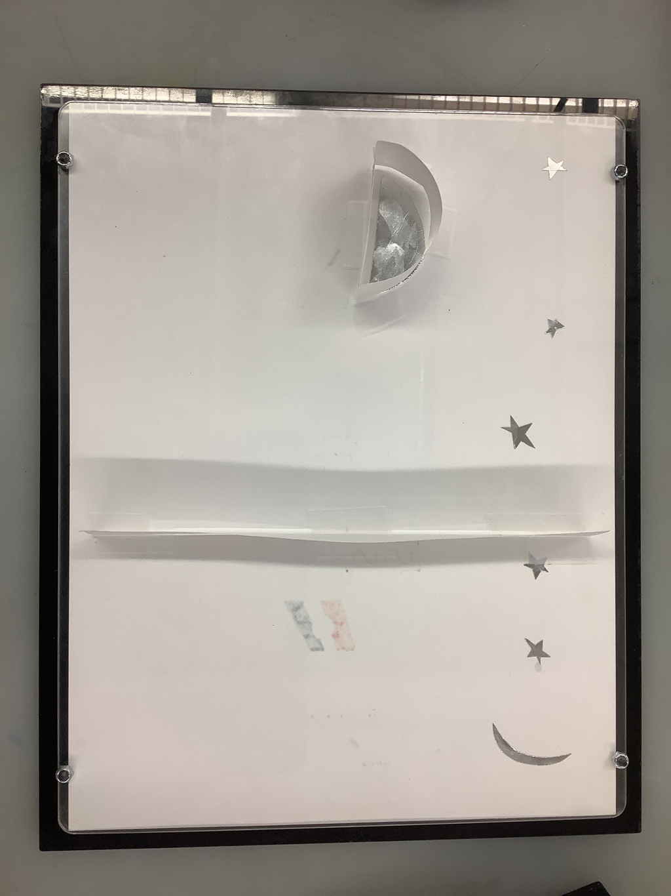
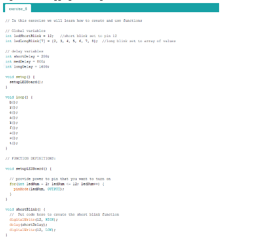

Belt-and-pulley transmission driving two laser-cut moiré discs at independent speeds with ultrasonic proximity-reactive LED lighting.
Organization
Dos Pueblos Engineering Academy
Role
Individual Designer, Machinist & Programmer
Assembly Scale
Several Hundred Discrete Components
// Dual-Plate Moiré Optical Phase Simulator
Disc Geometry12-Fold Tangent-Chord Web
Proximity SensorUltrasonic Triggered LEDs
Bearings & FitArbor-Pressed & 6-32 Tapped
Interference StateGENTLE DRIVE (0.35x)
Finished Kinetic Sculpture running with backlit moiré interference pattern.Full SolidWorks assembly drawing used for shop fabrication.
Optical & Mechanical CAD Design
Starting from pencil moiré studies, I modeled every component in SolidWorks and generated full assembly drawings for fabrication. Fixing a persistent parallel-extrusion constraint conflict on the disc required isolating over-constrained sketch entities and rebuilding clean geometric relations—practical troubleshooting that directly supported my CSWA exam prep.
Initial pencil concept study for moiré geometry.Parametric moiré cutout sketch in SolidWorks.Finalized digital disc pattern prior to laser cutting.
Shop Fabrication & Precision Assembly
I machined the vertical column and structural brackets on a Hardinge lathe and manual vertical mill using edge-finder datum pickups and peck-drilling cycles, tapped Delrin standoffs 6-32, arbor-pressed ball bearings into the transmission plate, and assembled the structure with 4-40, 6-32, and 8-32 hardware verified with calipers.
Drilling center mounting holes on a disc blank.Machined and 6-32 tapped Delrin spacers.Transmission plate with arbor-pressed bearings.
PCB Soldering, Firmware & Debugging
I hand-soldered the control PCB (observing electrolytic capacitor polarity for bidirectional H-bridge drive) and programmed speed/direction profiles plus ultrasonic proximity lighting in C/C++. When the outer-hoop LED strip flickered during bench tests, partial disassembly and continuity probing isolated a cold solder joint that was reflowed for reliable operation.
SolidWorks (CSWA Prep)
Hardinge Lathe & Manual Mill
Arbor Press & Tapping
Through-Hole PCB Soldering
C/C++ Motor & Sensor Control
Completed Kinetic Sculpture operating with dual-disc moiré interference.
Machined and anodized aluminum housing with an edge-lit acrylic rod matrix programmed with an Indian-flag tricolor sequence and a lathe-turned Delrin control knob.
Organization
Dos Pueblos Engineering Academy
Role
Individual Designer, Machinist & Programmer
Schedule
Delivered 2 Weeks Ahead of Deadline
// Top-Down Acrylic Rod Layout & Indian Tricolor Sequence
Mirrored Outer Bands4 Saffron ↔ 4 Green Rods
Center 6-Rod Ring3 Dark Blue + 3 Small White
Potentiometer DialLathe-Turned Delrin Knob
Active SequenceSTATIC TRICOLOR
Assembled acrylic rod cluster illuminated during operation.Multi-view technical drawing (MVD) used for shop fabrication.
After documenting every part in a dimensioned multi-view drawing (MVD), I machined the aluminum base and top plate on the manual mill (edge-finder pickups, peck-drilling) for anodizing and turned the Delrin potentiometer knob on the lathe for a play-free press fit. I soldered the LED driver board, logged per-channel voltage and current draw, and delivered the completed build two weeks ahead of schedule ahead of a family trip.
Drilled and anodized aluminum mounting plate.Per-channel voltage, current, and power measurements.Completed anodized enclosure housing.
Multi-View Technical Drawings
Manual Mill & Lathe
Anodizing Prep
Circuit Power Characterization
Microcontroller Firmware
Light Sculpture Build Archive
Rod cluster assembly, CAD render.Clear acrylic rod cluster prior to wiring.

Rod cluster dry-fitted onto base plate.

Machined aluminum enclosure pre-assembly.

Machined Delrin rod-mounting spacer.Shop practice piece: machined metal pendant.
Multi-layer two-point perspective shadow box with photoresistor feedback control that automatically illuminates in low ambient light.
Organization
Dos Pueblos Engineering Academy
Role
Individual Design, Fabrication & Firmware
// Photoresistor Voltage-Divider Trigger
BACKLIGHT: ON (Vdivider < DARKNESS THRESHOLD)
Completed shadow box triggered automatically in low ambient light.LED array and photoresistor voltage-divider wiring schematic.
Layered Framing & Analog Sensor Control
I hand-drafted the foreground scene in two-point perspective, laser-cut layered acrylic diffusers modeled in SolidWorks, and arbor-pressed the hardwood perimeter frame for a glue-free mechanical joint. After verifying LED current draw on a breadboard, I soldered the perfboard circuit and programmed array-indexed LED states triggered by an analog photoresistor voltage divider.
Completed two-point perspective artwork.

Dimensioned CAD print for acrylic back plate.Rear electronics assembly powered during bench test.
Two-Point Perspective Drafting
SolidWorks & Laser Cutting
Woodworking & Arbor Press
Breadboarding & PCB Assembly
Analog Sensor & Array Firmware
Shadow Box Build Archive
Wooden frame stock prior to assembly.

Diffuser layer stack for depth separation.

Moon-and-star diffuser mask cutout.Frame dry-fit with uncolored line drawing.Press-fitting frame joints on the arbor press.Colored illustration seated in finished frame.

Early Arduino firmware function test.Array-indexed LED channel firmware.